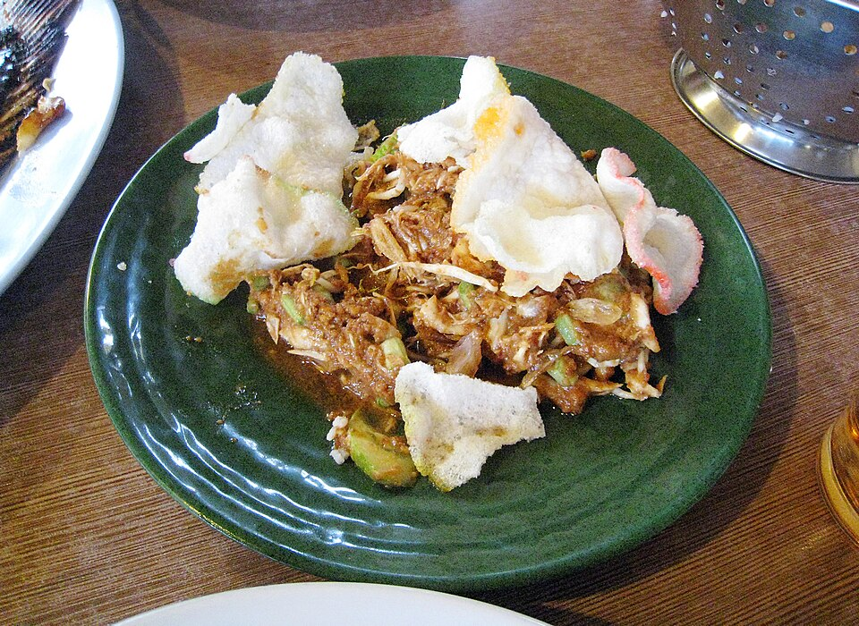
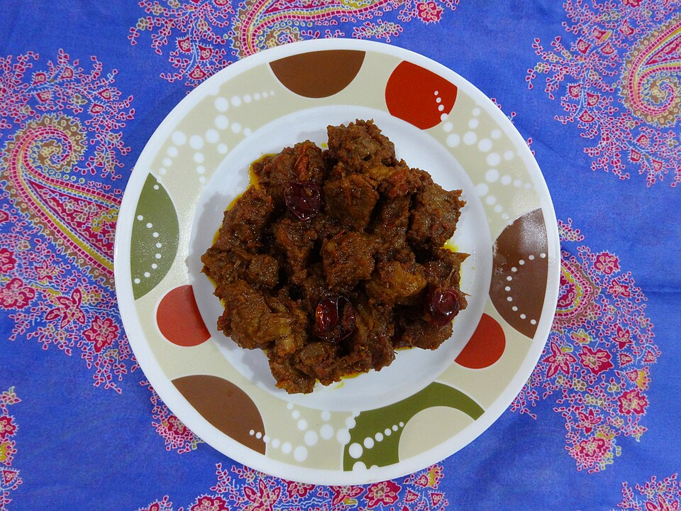
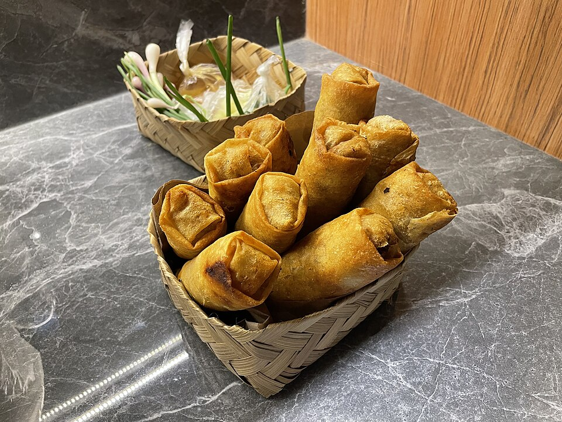
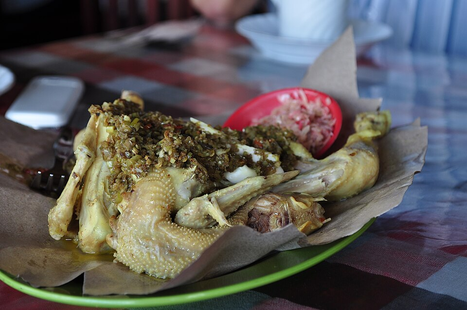

Tentang Kuliner Indonesia
Kuliner Indonesia adalah kumpulan masakan dari ratusan suku bangsa yang tersebar di seluruh nusantara. Ciri khasnya adalah penggunaan bumbu dan rempah yang kaya, seperti kunyit, jahe, lengkuas, serai, cabai, dan santan, sehingga menghasilkan rasa yang kuat dan beragam.
Makanan Indonesia sangat beragam karena setiap daerah memiliki hasil alam, iklim, dan adat yang berbeda. Selain itu, sejak dulu Indonesia menjadi jalur perdagangan rempah dunia sehingga mendapat pengaruh dari budaya Tiongkok, India, Arab, dan Eropa yang kemudian berpadu dengan resep lokal.
10 Makanan Khas Indonesia
- Rendang (Sumatera Barat)
- Gudeg (DI Yogyakarta)
- Sate Madura (Jawa Timur)
- Pempek (Sumatera Selatan)
- Soto Betawi (DKI Jakarta)
- Karedok (Jawa Barat)
- Ayam Betutu (Bali)
- Lumpia Semarang (Jawa Tengah)
- Coto Makassar (Sulawesi Selatan)
- Papeda (Papua)
Informasi Kuliner
| Makanan | Daerah Asal | Bahan Utama | Rasa |
|---|---|---|---|
| Rendang | Sumatera Barat | Daging sapi, santan, dan rempah | Gurih dan pedas |
| Gudeg | DI Yogyakarta | Nangka muda dan santan | Manis dan gurih |
| Pempek | Sumatera Selatan | Ikan tenggiri dan sagu | Gurih, asam, dan pedas (cuko) |
| Coto Makassar | Sulawesi Selatan | Daging dan jeroan sapi | Gurih dan kaya rempah |
| Papeda | Papua | Tepung sagu | Tawar, dimakan dengan kuah ikan kuning |
Kuliner Jawa Barat

Karedok adalah salad sayuran mentah khas Sunda yang terdiri dari kol, mentimun, tauge, kacang panjang, dan terong bulat, lalu disiram bumbu kacang yang diulek bersama kencur.
Masyarakat Sunda dikenal gemar makan lalapan atau sayuran segar. Karedok lahir dari kebiasaan itu, dan namanya berasal dari kata "ngaredok" yang berarti mentah. Rasanya segar, gurih, dan sedikit pedas.
Kuliner Sumatra

Rendang adalah masakan daging sapi khas Minangkabau, Sumatera Barat, yang dimasak dengan santan dan rempah-rempah selama berjam-jam hingga kuahnya mengering dan bumbunya meresap.
Dahulu rendang dibuat sebagai bekal perantau Minang karena tahan lama tanpa bahan pengawet. Rendang juga selalu hadir dalam upacara adat dan pernah dinobatkan sebagai salah satu makanan terlezat di dunia.
Kuliner Jawa Tengah

Lumpia Semarang adalah gulungan kulit tipis berisi rebung, telur, dan udang atau ayam yang disajikan goreng maupun basah, biasanya ditemani saus kental, acar mentimun, dan daun bawang.
Lumpia lahir dari pernikahan pedagang Tionghoa bernama Tjoa Thay Joe dengan wanita Jawa bernama Mbok Wasih pada abad ke-19. Perpaduan resep keduanya membuat lumpia menjadi simbol akulturasi budaya di kota Semarang.
Kuliner Bali

Ayam Betutu adalah ayam utuh yang diisi dan dilumuri bumbu base genep khas Bali, lalu dibungkus daun pisang dan dimasak perlahan dalam waktu lama hingga dagingnya empuk.
Awalnya ayam betutu hanya disajikan dalam upacara keagamaan dan untuk keluarga kerajaan. Kini ayam betutu, terutama dari Gilimanuk, menjadi oleh-oleh kuliner yang wajib dicoba wisatawan di Bali.
Kuliner yang Ingin Kami Coba
- Papeda dengan ikan kuah kuning dari Papua
- Coto Makassar dari Sulawesi Selatan
- Mie Aceh dari Aceh
- Ayam Taliwang dari Nusa Tenggara Barat
- Se'i Sapi dari Nusa Tenggara Timur